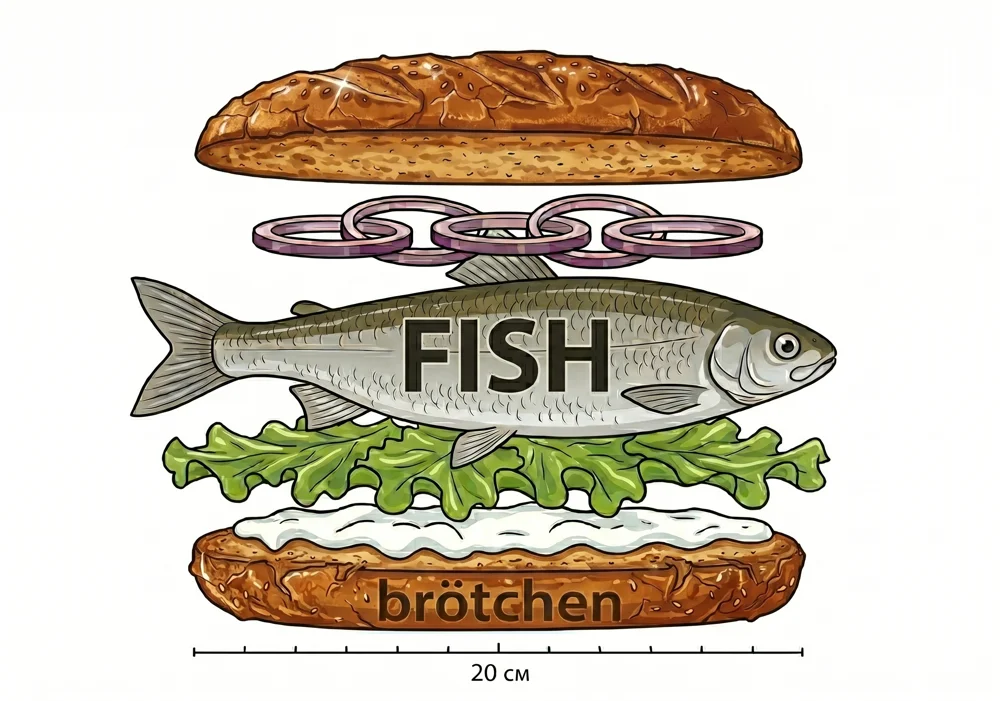

Flammkuchen
Eine herzhafte Pause nach dem Strandspaziergang.
● NORDSEE IM BLICK. AMRUM IM HERZEN.
Die Füße im Sand. Den Wind im Haar.
Und etwas Gutes auf dem Tisch.
Willkommen im Strandbistro 33.
01 / DAS STRANDBISTRO
Manchmal braucht es nicht viel. Einen weiten Blick, gute Gesellschaft und einen Lieblingsplatz am Meer.
Im Strandbistro 33 in Norddorf treffen kleine Strandpausen auf großen Appetit. Komm auf einen Kaffee vorbei, mach es dir mit etwas Herzhaftem gemütlich oder genieße die Aussicht von unserer Terrasse.
02 / ESSEN & TRINKEN
Für den kleinen Appetit.
Für die große Pause.
Für deinen Inselmoment.

Fischbrötchen. Inselglück zum Reinbeißen.
Eine herzhafte Pause nach dem Strandspaziergang.
Für den großen Appetit und ein bisschen Dolce Vita.
Ein Klassiker, der einfach zur Nordsee gehört.
DEINE VERABREDUNG MIT DER NORDSEE
Mehr Meer.
Weniger müssen.
03 / DEIN BESUCH
Du findest uns am Strand von Norddorf auf Amrum.
Wir freuen uns auf dich.
Strandbistro 33
Strunwai 33
25946 Norddorf auf Amrum
Unsere Öffnungszeiten sind saisonabhängig.
Ruf für deinen Besuch gerne kurz an.